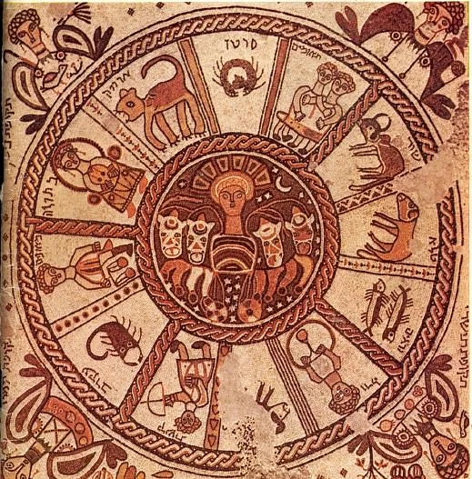
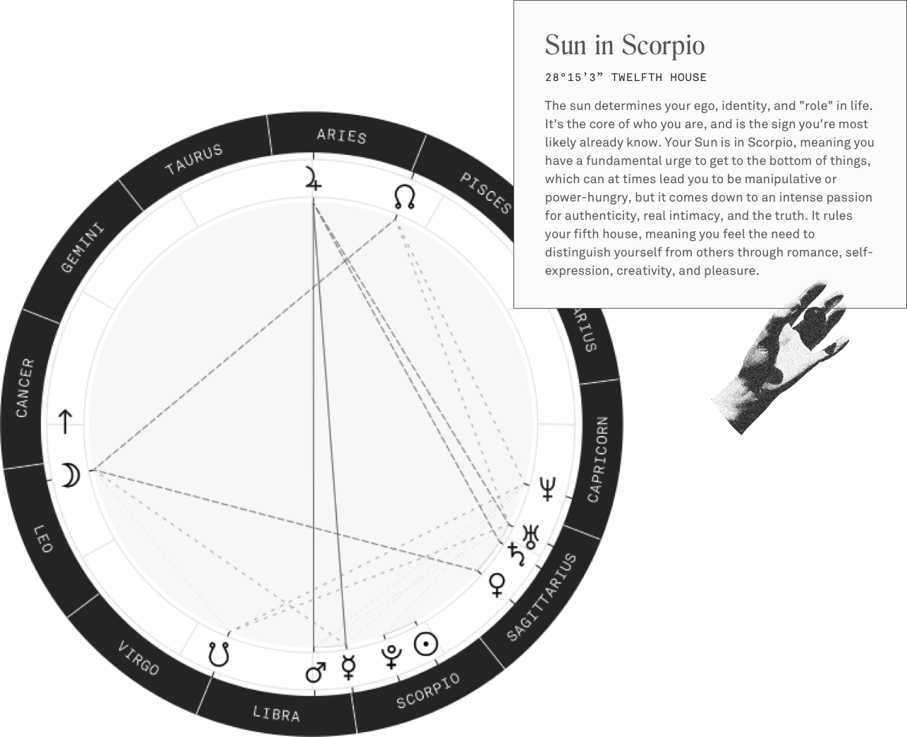
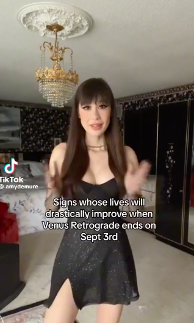
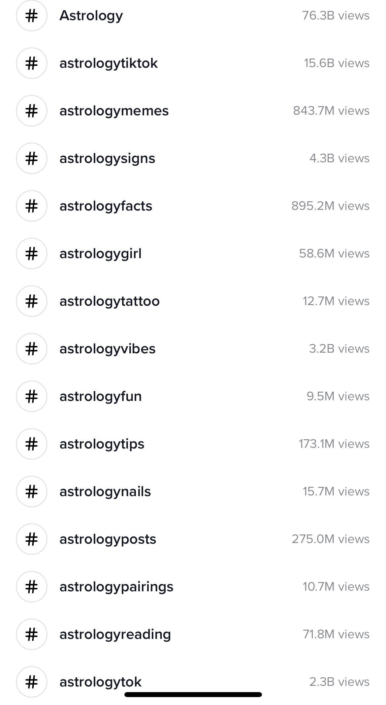

Astrotalk, an astrology startup led by CEO Puneet Gupta, has unveiled plans for its mobile app and platform to go public by 2025. The app has capitalized on the thriving astrology market in India by facilitating connections between users and top Indian astrologers through private chatrooms. Over time, Astrotalk has successfully expanded its reach to include users and astrologers from around the world
Simultaneously, the AI-powered astrology app Co-Star has gained significant traction among Gen-Z in the U.S. and has essentially functioned as a novel social network. This platform enables users to explore the birth charts of their friends, and its popularity has been further propelled by influencers on TikTok and Instagram who engage thousands of followers through astrological predictions and tarot readings.
The widespread acceptance and engagement with astrology, often dismissed as an “occultist study” or “pseudoscience,” raises intriguing questions. How did this traditionally private, spiritual study find such resonance online, especially for younger generations? Does technology legitimize astrology?
Let’s take a brief look back at the study of astrology.
Astrology is the ancient practice of interpreting the influence of stars and planets on earthly affairs and human destinies. Although astrology is considered a pseudoscience today, it was once inseparable from astronomy. Most cultures recognized constellation patterns and measured the movement of celestial bodies, such as the Sun, Moon, Jupiter, and Saturn, to make their calendar and for navigation purposes.
The study’s roots trace back to Mesopotamia around the 3rd millennium BC. Jyotish or Vedic astrology, the Indian form of astrology, has been practiced since sometime between 5000 to 10,000 BC. Jyotish is rooted in the Vedas, the oldest texts written in Sanskrit, which inform Hindu religion and philosophy. Astrology remains integral to Hinduism and continues to hold significance in modern-day India.
Astrology evolved into its Western form during the Hellenistic period in Greek civilization and entered Islamic culture as part of the Greek tradition; however, other forms of astrology have not been practiced continuously as much as it has in India due to religious power struggles, especially the rise of Christianity in the West.
In the West, astrology was considered a valid way of observing and understanding the universe until the rise of Aristotelian physics and the acceptance of heliocentric by the 17th century. By the 18th century, all the academics who were pro-astrology faded away and the practice was no longer considered science or religion, simply an old divinatory art.
With groundbreaking discoveries in the life sciences, include neuroscience and psychology, in the beginning of the 20th century, the validity of astrology was gone. The ascent of new media transformed astrology into a form of entertainment, notably with newspaper columns presenting daily horoscopes. The study extended to other territories, even serving as inspiration for one of America's most infamous killers, the Zodiac Killer, and influencing various Hollywood films.
With the emergence of social media, astrology has entered a new phase of "pop culture astrology" or "pop astrology” with the ubiquitous question “What's your sign?” even being integrated into the branding of many companies
Especially after COVID, pop culture astrology has experienced a surge, coinciding with heightened levels of loneliness as individuals seek deeper meaning. If you are doom scrolling on TikTok, it will not take long before you reach someone preaching that your love life will improve within the next month.
In a Pew Research Center study from 2018, six out of ten American adults accept at least one New Age belief, which includes belief in reincarnation, astrology, psychics, and the presence of spiritual energy in physical forms such as mountains or trees. In that same study, twenty-nine percent of religious people and thirty-nine percent for spiritual people said they believed in astrology. I am certain that the number has increased since COVID began.
The truth is that people are searching for answers, guidance, or a deeper meaning in their lives that institutions like religion are not giving to them.
This is where I found astrology.
Like most other people, I was only familiar with the “star signs” in astrology. However, my interest my grew when COVID erupted in 2020 and astrology content was booming on TikTok. Following a challenging breakup at the start of 2021, I delved into astrology on a deeper level, seeking to understand myself better and gain insights into the direction of my life.
I soon began studying the content of online astrologers and learned more details about my own chart through the AI-generated app Time Passages. I spent hours scrolling through Reddit and other online forums, and I even chatted with astrologers on Astrotalk. I have gained sufficient knowledge to offer readings for friends and clients, primarily through word of mouth.
After recognizing my exploration of astrology in the online realm and acknowledging the significant role online influencers played in enhancing my understanding within a broader context, many questions have come to mind for me:
Is astrology losing even more credibility due to social media and the growth of astrology influencers? Is astrology bolstering the new age movement and inspiring supporters of a new techno-religion movement?
Astrology has historically lost credibility among many scientists and religious scholars and authorities, spreading the common belief among the public that it is not real. While astrology does involve calculations, the scientific method cannot prove that it’s real. However, another variable is that astrology allows for various interpretations. It adheres less to dogma; however, even followers of institutional religions often cherry pick what they want to believe
Schisms have occurred in other religions due to differences in interpretation and astrology has been no exception. However, the variability in astrology further challenges its validity.
Many individuals find comfort in selectively adopting New Age beliefs, occasionally blending them with their perspectives on spirituality, Christianity, or their personal religious beliefs. But they no longer want to follow an institution
Many astrology enthusiasts may not necessarily study astrology as a science; instead, they often adhere to what resonates with their beliefs, sometimes overlooking the intricate details that astrology encompasses. This has evolved into what is referred to as “pop culture” astrology, which receives the highest online engagement within the astrological community due to its entertaining aspects.
Yes, these are the posts that make predictions such as “Virgos will find a new love in the next month, but beware of Scorpios,” which often prompts people to form generalized views, alter their behavior, or indulge in wishful thinking. Or on the opposite end of the spectrum, to think the world is going to end tomorrow
This has been up for debate even within the astrology community.
With 1.3 million followers on TikTok, astrology Amy Demure sparked a debate within the astrological community in November 2023 after another astrologer called her out for the alleged misuse of the practice, contending that it may be doing more harm than good to her followers by tapping into their hopes and insecurities.
This undermines the credibility of the astrological community, especially given that astrology is already perceived as a pseudoscience. Supporters of Demure argue that astrology is open to interpretation, and she has the freedom to market it in any way she chooses.
This highlights the issue with the commercialization of astrology through online platforms. It captures the viewer's attention by tapping into their feelings of loneliness or other negative emotions, promising them that the universe has a plan and there is a way out.
The popularity of online astrology content and astrology apps, whether accurate or not, paints a larger picture in the broader context of technology. People are using technology for an intuitive understanding of themselves and to foster connections within.
Alone time during COVID further legitimized this new reality.
And it left astrologers adopting new techniques to reach their followers/clients.
People believe technology and spirituality are on opposite sides of the spectrum. An intuitive practice integrated into a machine? It seems almost counter-intuitive that social media is utilized for a connection to a higher power, but technology has now infiltrated every sphere. Even shamans, who have long been the medium between individuals and the natural environment, have embraced social media to engage with their followers. Traditional private practices and rituals are now being livestreamed, breaking traditional boundaries and opening up to the group consciousness in the digital era.
However, AI powered apps with selected algorithms are deleting the middleman, whether it is the shaman or the astrologer. With personalized insights delivered by platforms like Co-Star or Time Passages, individuals assume the role of the astrologer, fostering a direct connection to their own personal power, for better or for worse.
While some engage for entertainment or as part of the pop culture trend, many people genuinely believe in and rely on these insights.
Followers of astrology often present themselves as individuals open to interpretation and embracers of change and the unknown, rejecting adherence to institutional norms. In astrology, where rules with political undertones are less prominent, the emphasis lies on personal empowerment without subscribing to bureaucratic constraints or authority-driven laws. The focus shifts towards different realms of consciousness, aiding individuals in understanding themselves in the present moment and diminishing reliance on authority figures.
Astrology, with its focus on individual empowerment, significantly aids the techno-religious and techno-spiritual movement, diminishing the influence of institutional religion. In an era where technology wields considerable control over our lives through smartphones, apps, and gadgets, the interplay between technological advancements and the power of our own minds raises the question: Is technology truly conducive to spirituality?
Simultaneously, technology and social media have eroded faith in traditional authorities.
Technology and spirituality are more alike than not.
Technology is the medium, allowing us to understand the human mind more and connect to our higher self. As machine consciousness develops, there are benefits for the machine to understand the workings of the subconscious.
The astrology industry will continue to be a booming industry, with an intriguing future shaped by AI advancements. Higher accuracy in readings, the emergence of AI-generated astrologers, astrology chatbots, and VR group astrology readings and practices are all possibilities. And they all do not include a physical authority figure.
Many people dismiss the pop astrology trend as a made-up belief system that links the planets to personality traits. But it is so much more than that.